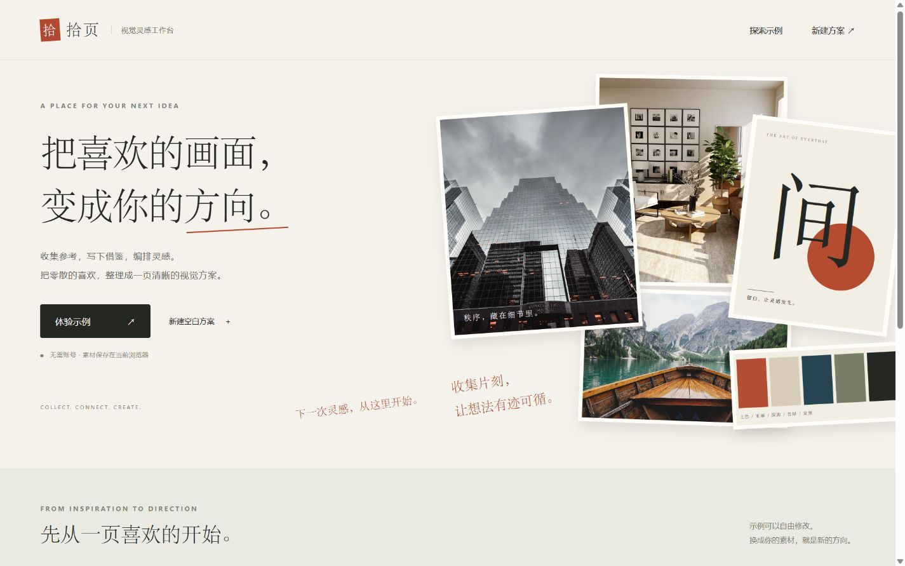
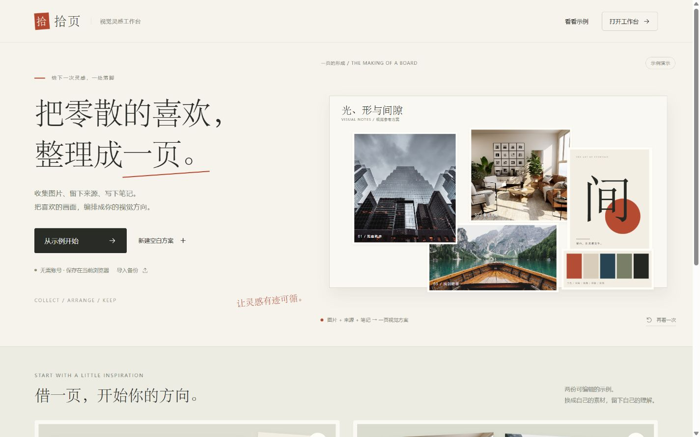
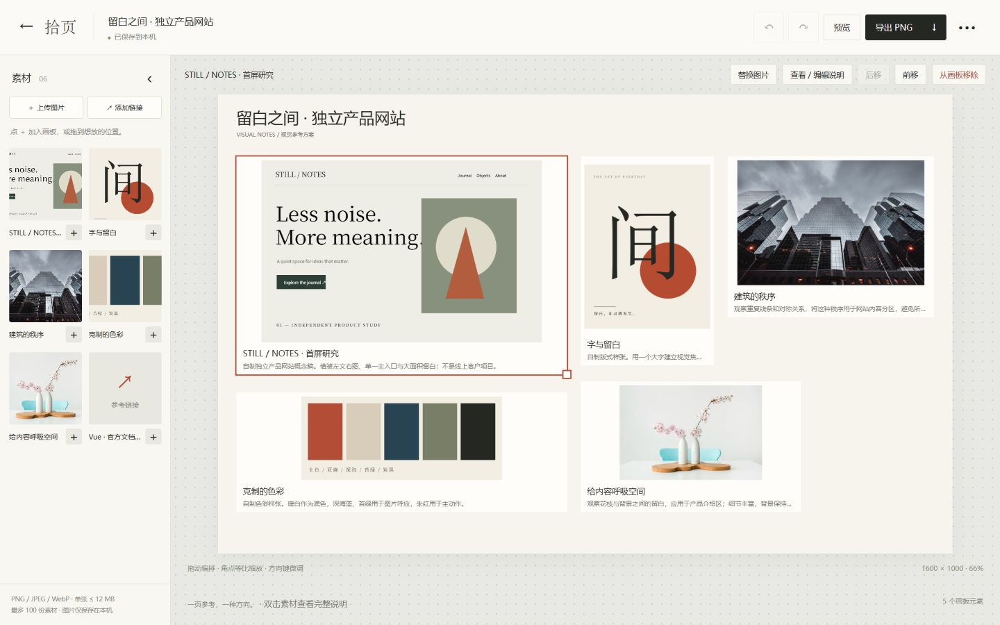
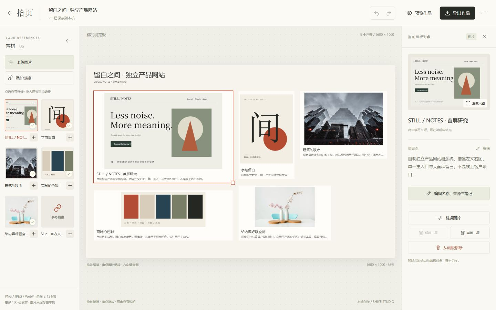
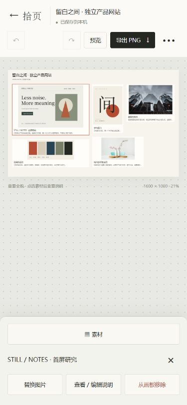
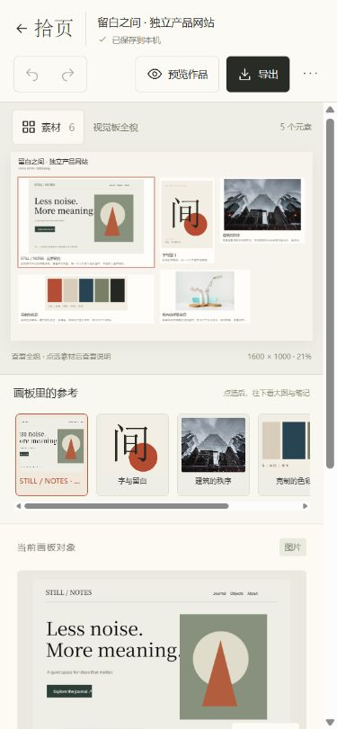
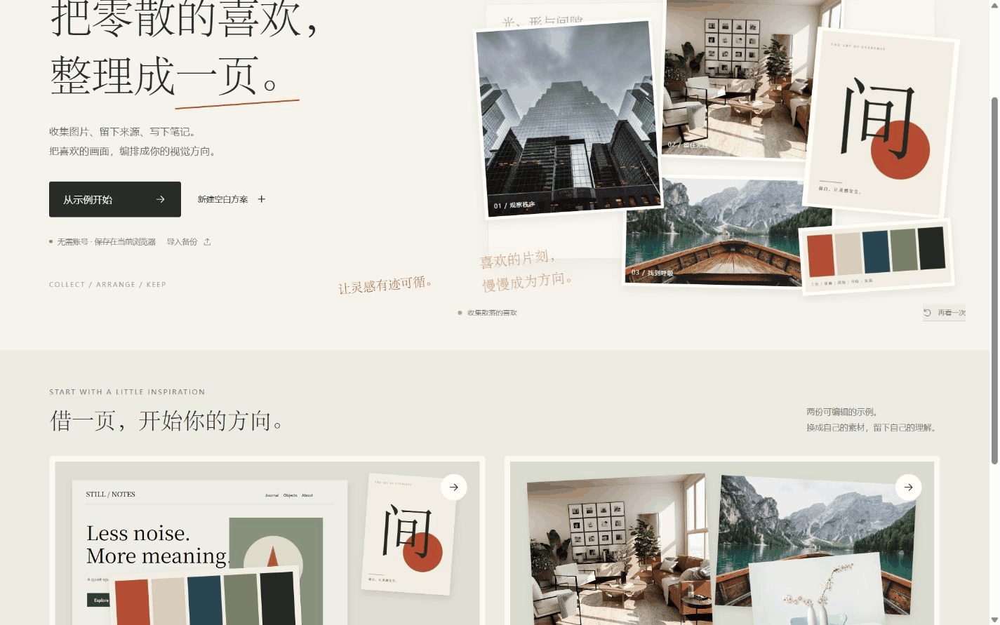

把零散的喜欢，整理成一页。
拾页第一轮体验升级 · 2026-10-06。原版为起点
4bc4b3c；新版为本轮生产构建。图片均来自实际页面，比较使用相同CSS视口和同一产品示例，不是概念稿。
最初在实施前运行原版并拍基线；最终发现部分图片捕获过早，已从起点源码快照独立补拍。截图工具排除滚动条并可能有取整，文件像素尺寸不完全等于CSS视口；没有拉伸图片。测试模拟手机，真机与Safari未验证。
首页 · 1440 × 900


桌面编辑器 · 1440 × 900


手机轻编辑 · 375 × 812


1280 × 720 与 390 × 844
改前首页1280改后首页1280改前编辑器1280改后编辑器1280改后首页390改后编辑器390


实际归拢过程 · 19帧采样
